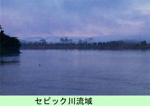

|
第６９ 敵前逃亡の相談
 前年の昭和１９年５月には、２ケ月にわたるアイタペ作戦で、戦死者は六万有余名を数え、戦闘に参加した兵士の話によると、 道の両側に屍が累々と続き目を覆う有様だったと、言っていました。アイタペ作戦は失敗に終わり、遂に昭和１９年の秋に、全 軍はセピック河流域の周辺に散開し自活態勢に入りました。全軍の兵力は、体の弱い兵士が殆どで戦力はないに等しく、猛軍は 三個師団でしたが、兵力は僅か１万３千人になっていました。武器弾薬もなく、あまつさえ食料が極めて乏しく、誠に悲惨な戦 場でした。そんなある日、沢大軍曹が突然に私に向かって 『山口中尉殿、山に逃げましようよ。生きられるだけ生き延びましよう。このままだと、回りを敵に包囲されているから、いづ れ玉砕するだけですよ』という。客観情勢は誠に彼のいう通りの戦況でありました。が、それでも私は日本帝国陸軍の将校であ ります。よくも、そんな事をこの俺に、相談するものだとムッとしました。私は外の将校に比べれば、がめつい将校では無かっ たから、くみしやすいとでも思ったのであろうか。そこで、私は 『俺は逃げないよ。その内に死ぬであろうが、安達軍司令官閣下と一緒に死ぬのなら、本望だ。お前は妻子もあり、応召兵 だし、見逃してやるから、逃げたければ逃げてもよい』と、その場で本人に、はっきりと返事した。 それでも、沢大軍曹は逃亡したら私に射殺されるとでも思ったのか、何故かは知らないが、彼は逃亡しなかった。彼は自分１ 人で逃亡する勇気がなかったのであろう。 それから間もなく、彼は本部命令でウエワク方面の第一線の陣地配備についた。この頃は通信兵と言えども、銃を取り歩兵同 様に陣地について守備していました。 沢大軍曹から敵前逃亡の相談を受けてから、２ヶ月ほどしてから私もウエワク方面の守備陣地につく事になりました。第一線 陣地の配備についてから、何日かたったある日、偶然に陣中で沢大軍曹に出会った。その時、彼は病床に伏せていた。彼は私の 姿を見て 『とうとう、山口中尉殿も来ましたね』と言った。側にいた橋口軍医大尉（昭和５５年死亡）が彼の言葉を聞き咎め 『そんな憎まれ口を言うもんではない』と言って彼をたしなめました。私はこの時以来、彼に会っていませんが、沢大軍曹はイ ガの近くのユモクと言う所で病死したと言う事を伝え聞きました。若し、彼が逃亡したとしても、あの未開地の蕃地では、長く は生きて行けるものではない。もともと彼は体が丈夫な方ではなかった。戦後４０年たった今でも彼の顔はよく覚えています。 一方、ほかの戦場では、山砲大隊長の竹永少佐が部下３０名を連れて、敵の軍門に投降したという話を兵隊達は密かに話し合 っていました。この竹永少佐は日本に終戦後、生還しましたが昭和３０年代に死亡しています。この投降事件は、防衛庁の戦史 資料にも載っています。 話は第一次世界大戦に溯ります東部ニユーギニアは昔はドイツ領でした。第一次世界大戦の時、ドイツの将兵はセピック河に 逃げ込み終戦になってから、僅かの将兵が生き残って出て来た、という史実がありました。その事を知っていた我々はドイツ兵 と同じ運命をたどるという思いで、終戦まで戦い続けていました。 戦後４０年たってから、須貝准尉さんに手紙をもらい沢大甚助軍曹は昭和２０年８月２日、ユモクにて病死したと聞きました。 同年８月１５日には終戦となったが、彼は終戦を待たずに病死している。 |